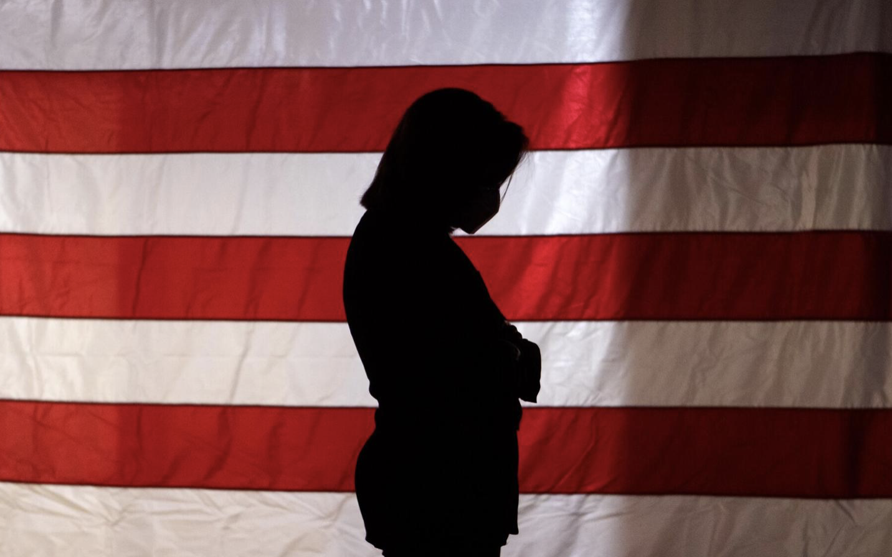

Published Work
Over the past few years, I have gotten the experience of being a staff photojournalist and staff reporter at the Columbia Missourian as well as interning at Kansas City Magazine for two summers. These are pieces I wrote, some pieces I also photographed.
Fall Fashion: A Look At This Year’s Trends, From Bell Bottoms To Plaid Trench Coats

After a scorching summer, temperatures are finally dropping. Stay warm yet fashionable with these city-inspired outfits perfect to wear all season long.
ARTIST ASKIA BILAL PUTS A SPIN ON 'WHEEL OF FORTUNE' WITH MIXED MEDIA

Bilal, currently part of the Orr Street Black Artist in Residence Program, will have his work on display until Feb. 27.
‘WE DIDN’T LEAVE ANYTHING UNDONE’: BAKER’S CAMPAIGN FIGHTS FOR STATE SENATE SEAT
As the U.S. waited for election results Tuesday, Judy Baker's campaign team held its breath for races closer to home.
Donating old clothes? Most will end up as waste
Only 10% of donated items are actually sold. Used clothing often is sent to landfills, shipped to other countries or burned.